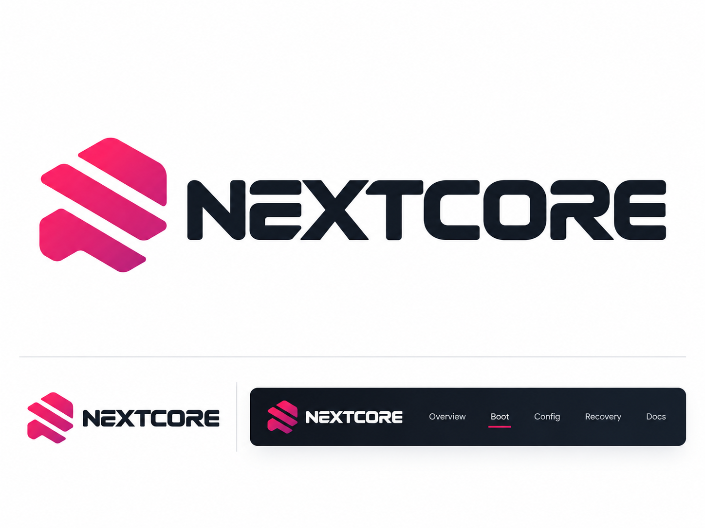

Experimental project
NextCore
An experimental UEFI project for macOS boot paths on x86. It is not a finished operating-system port and not a supported installer.
Getting Started Public repository
What this is
26x86 develops NextCore as an experiment: a prebuilt x86_64 UEFI picker, an EFI folder generator that downloads official OpenCore, and a Windows script that writes that folder to a USB ESP. Crate source and research stay in the private monorepo.
What this is not
- Not a verified macOS boot. macos_boot_verified is false.
- Not Apple Recovery. A BaseSystem.dmg copied onto exFAT is a file, not a Recovery volume.
- Not a hardware support list. The 15IGL7 profile documents Gemini Lake (no AVX2, no macOS 26 GPU driver).
- Not OpenCore itself. OpenCore is downloaded from acidanthera/OpenCorePkg at build time.
Getting Started
Requires Python 3.9+ and, on Windows, an elevated PowerShell 5.1+ session.
git clone https://github.com/26x86/NextCore.git
cd NextCore
python tools/make_efi.py --profile 15igl7 --out out/15igl7
# elevated PowerShell
.\tools\make-usb.ps1 -List
.\tools\make-usb.ps1 -Profile 15igl7 -DiskNumber <N> -ForceReplace SystemSerialNumber, MLB, SystemUUID, and ROM in EFI/OC/config.plist before use. The macOS Recovery picker entry is disabled until an APFS Recovery volume exists.
Public tools
| Name | Description | Path |
|---|---|---|
| BOOTX64.EFI | Prebuilt picker (apfs-jumpstart, console-control). | bin/NEXTCORE/BOOTX64.EFI |
| make_efi.py | Downloads OpenCore, generates config.plist, runs ocvalidate, builds EFI/. | tools/make_efi.py |
| make-usb.ps1 | Creates a FAT32 ESP on a USB disk and copies EFI/ with hash verification. | tools/make-usb.ps1 |
Status
Values below are the current public record. They are not a roadmap.
| Item | Value |
|---|---|
| x86 UEFI load | partial |
| OpenCore chain-load | staged |
| macOS Recovery volume | absent on exFAT |
| macos_boot_verified | false |
Version 1.0.0 is a packaging release. Version 2.0.0 is reserved until UART evidence shows target-matching XNU and userspace.
Repositories
The public consumer repository is NextCore. Other Nextcore-* repositories are module exports.
| Repository | Role |
|---|---|
| NextCore | Picker binary, EFI generator, USB writer |
| 26x86 | Private monorepo (source, research) |
| Nextcore-EFI | UEFI application |
| Nextcore-Core | Configuration and codecs |
| Nextcore-HAL | ACPI, PCI, SMBIOS, DeviceTree |
| Nextcore-ISE | ARM64e instruction runtime |
| Nextcore-GPU | GPU policy |
| Nextcore-APLS | AArch64 recovery runner |
| Nextcore-Tool | CLI orchestration |
Identity
Brand board from NextCore-Brand-Kit (symbol, wordmark, dark navigation example).
